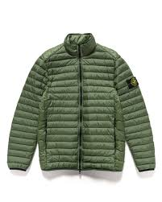

PHILOSOPHY OF STONE ISLAND
A culture of research, experimentation and usability are the matrixes that have always defined Stone Island; the brand, established in 1982, destined to become a symbol of extreme research on fibres and textiles applied to innovative design.Each Stone Island piece is born from the perfect synthesis between experimentation and usability, between the study of fabrics and rationality. The study of uniforms and of workwear, its evolution according to new functions of use, becomes Stone Island’s observatory for defining a project where the clothing’s purpose is never just purely aesthetic.

An ongoing and in-depth investigation into the transformation and ennobling of fibres and fabrics, and the unique ability to intervene on the finished garment through continuous dyeing experiments have led to the discovery of materials and production techniques never previously used by the clothing industry. This has brought Stone Island -over the years- to develop more than 60,000 different dye recipes.